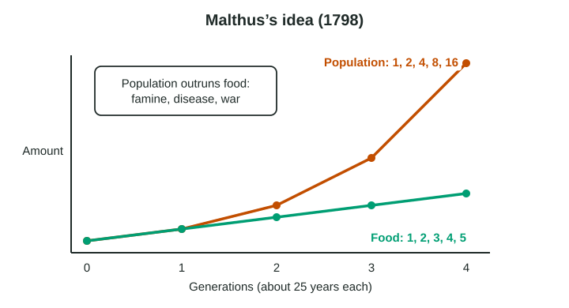

Can the world feed everyone? That question is more than two hundred years old. In 1798, Thomas Malthus, an English clergyman and economist, wrote An Essay on the Principle of Population. His answer was a warning.
Malthus’s argument

Malthusian theory says that population tends to grow faster than the food supply.
- Population grows geometrically: it multiplies, 1, 2, 4, 8, 16. Malthus thought an unchecked population doubles about every 25 years.
- Food grows arithmetically: it adds the same amount each time, 1, 2, 3, 4, 5, because farmland is limited.
- So population outruns food. Then checks bring it back down: famine, disease and war, which Malthus called misery. In later editions (from 1803) he also hoped for "moral restraint": people marrying later and having fewer children.
His theory links to carrying capacity from Topic 2.2: Malthus believed every place has a fixed limit on the people its land can feed.
Worked example: Malthus and the rule of 70. If a population doubles every 25 years, its rate of natural increase is about 70 ÷ 25 = 2.8 percent a year.
The neo-Malthusians
Neo-Malthusians are later thinkers who share Malthus’s worry but widen it. In The Population Bomb (1968), the biologist Paul Ehrlich warned of mass famine. Since the 1970s, neo-Malthusians have also worried that a growing population will use up fresh water, energy and soil and harm the climate, and they argue for slowing population growth.
Three critiques
Malthus’s warning has not come true at the global scale. World population has grown about eightfold since 1798, and food output per person has risen. Critics give three main reasons.
| Critique | What happened | Example |
|---|---|---|
| Technology | New seeds, fertilizer, machines and watering systems raised crop yields much faster than an arithmetic ratio | India’s grain harvest grew faster than its population from the 1960s to the 2010s |
| Falling fertility | Families chose to have fewer children as countries changed (DTM stages 3 and 4) | The UN projects world population to peak near 10.3 billion in the mid-2080s (UN WPP 2024) |
| Distribution | Hunger comes mostly from poverty, prices, conflict and how food is shared, not from too little food in total | The Bengal famine of 1943, studied by the economist Amartya Sen (1981) |
Trade is a fourth point: places that cannot grow enough food can buy it. Egypt imports much of its wheat. The Danish economist Ester Boserup (1965) went further, arguing that population pressure pushes farmers to find new, more productive methods.
Is Malthus still useful?
Hunger has not gone away. About 733 million people faced hunger in 2023 (FAO, The State of Food Security and Nutrition in the World 2024). But most hunger is in places with conflict or deep poverty, not in places where the world has run out of food. Malthus is still useful as a model: it asks whether a place can support its people, which is the question of carrying capacity. Its limits are its assumptions: fixed technology, no trade and no choice about family size.
When you write about Malthus, say what he claimed, then give one critique with a real example, and say how well the theory fits the case.